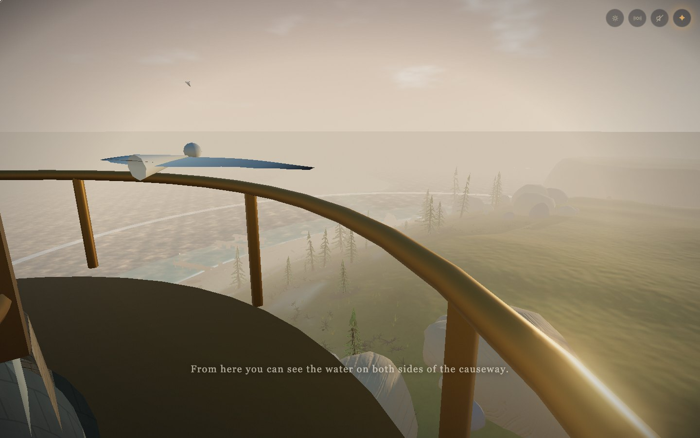
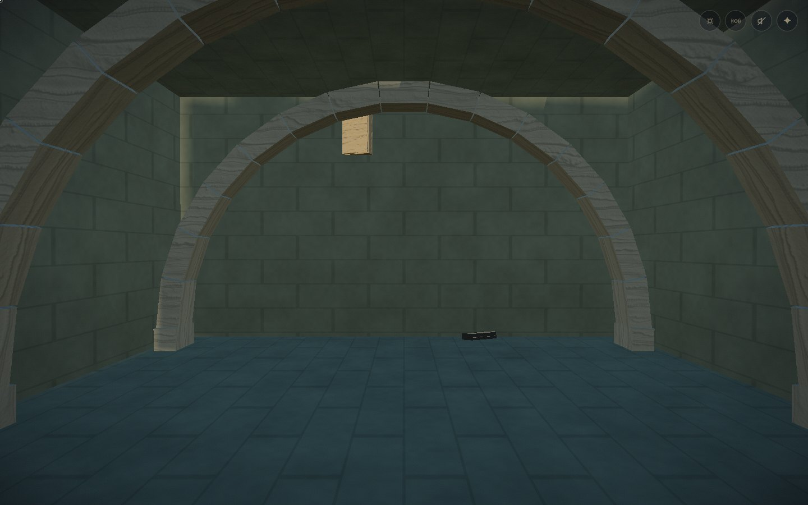
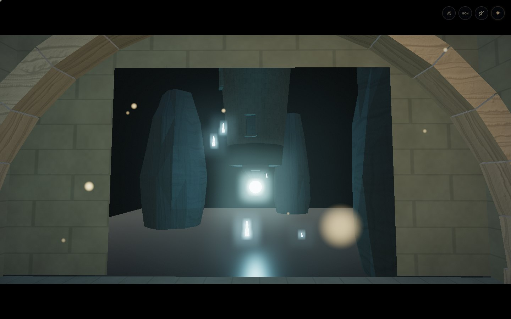
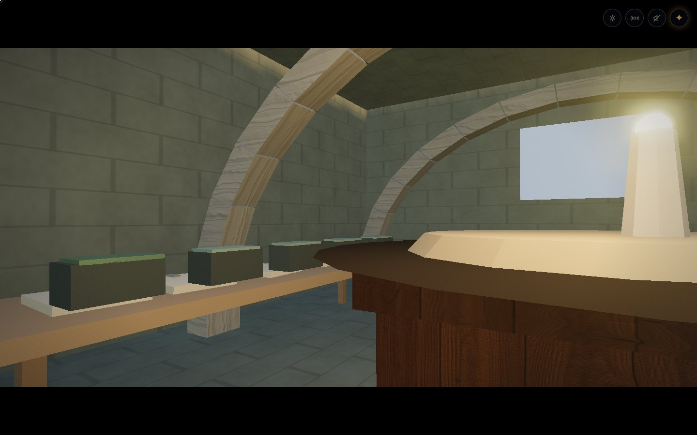

The Island · Landfall revision
There is more room here.
Climb the lighthouse past three windows. Follow the hatch stair beneath the bluff. Cross into the western study and lift the lid of a bread tin left among the drying papers.

Eighty-three physical treads lead to the lantern gallery.
A stone ramp leads under the standing stones.
The cellar opens onto the hanging lighthouse.
Two steps lead from the cellar into the western study.A clearer playthrough
103 illustrated moments cover the journey and all four endings. Related pages are grouped; repeated views fold into the action record. All 161 source captures, exact actions, saved states and 56 manuscript pages remain in the folder.
The tower stair and underground connectors use actual player collision in both directions. Long travel is accelerated and encounters use disclosed placement fixtures. This is a scripted route audit with screenshots.
Source and verification
Original Blender lighthouse, stairs, vaults, rock and wind pines are in tools/blender/landfall.blend. The room and boat kit remains in harbor-rooms.blend. Both have reproducible Python generators.
Landfall Blender source · Generator · Tower source render
Verification record · Build fingerprints · Every captured stage